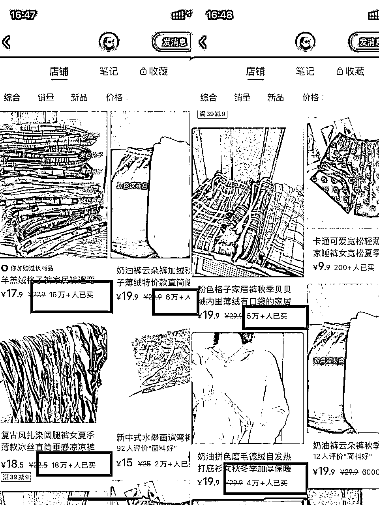
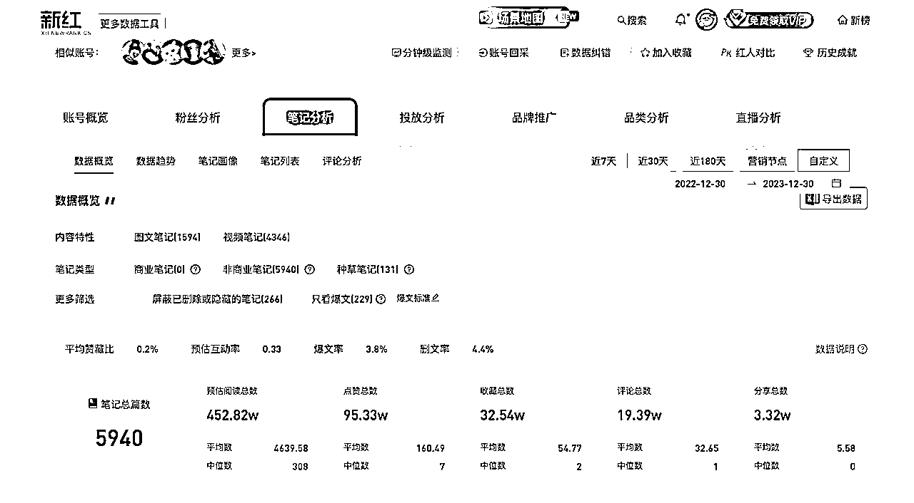
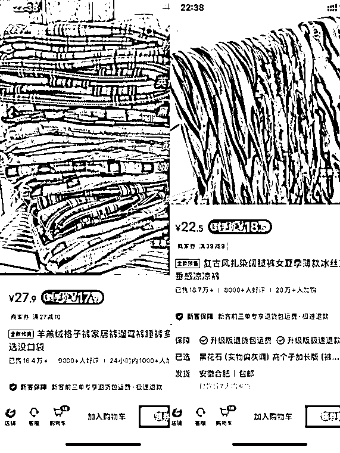
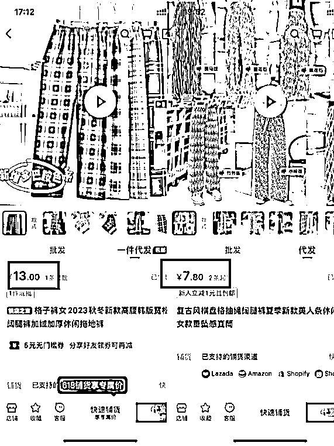

来源：https://txkxgfz9sxw.feishu.cn/docx/DQ1GdSOqdoskd9xyRMRcQuZvnIc
大家好，我是小鱼ちゃん，于今年1 月份加入生财。非常开心能参加此次的风向标拆解活动。
我这次拆解的题目是“小红书爆款，售卖件数50W+的店铺到底是怎么赚钱的”，根据题目我摘出三个关键词：「小红书」、「50W+」、「怎么赚钱」 。我根据这三个关键词来寻找拆解对象。
因为我个人对小红书的印象是女性用户群体占比很大，美妆服饰类的内容相对多，就对美妆服饰类商品进行筛选，选出了以下案例进行拆解。新手小白第一次拆解，分析不到位之处还请各位大佬多多交流指正。
平台：小红书
店铺名称：一树的店
粉丝数：7.7w
赞藏数：180.34w
总笔记数：6956
店铺销量：84.8W
店内一共 50+款在售商品，其中 40+是家居裤，可以看出此店铺产品很垂直。
下图是店内在售商品简单截图：

根据数据工具「新红」统计，一树的店创建于 2022 -12-04，截止到 2024-02-03，一共发布6956篇笔记，日均 20+篇，其中以视频笔记为主，约占 85%。
图片是 2023 年一年内发布的笔记数据，其中爆文有 229 条，大约每 1.6 天就有一篇爆文产生。

在小红书搜索「睡裤」+ 任意推荐的关键词，基本在前 20 都可以看到一树的笔记。由此可推断，在大量笔记内容下，关键词覆盖率比较高，有较好的 SEO 效果。
以店内两条爆款裤子为例，进行简单的利润分析。

如图，羊羔绒格子裤到手价为 17.9 元，扎染阔腿裤到手价为 18.5 元。
在 1688 和拼多多上搜索对比，由于 1688 价格更有优势，此处以 1688 价格作为利润分析参照。

以无货源模式进行分析，如下表，毛利润均值 7.8 元计算，那么总利润在 660万 左右。考虑到退货的情况，以退货率 30% 计算，利润也有 462 万左右。
| 产品/价格 | 进价 | 售价 | 利润 |
|---|---|---|---|
| 羊羔绒格子裤 | 13 | 17.9 | 4.9 |
| 扎染阔腿裤 | 7.8 | 18.5 | 10.7 |
| 平均利润 | 7.8 | ||
| 总销量 | 84.8W | ||
| 预估总利润 | 660W |